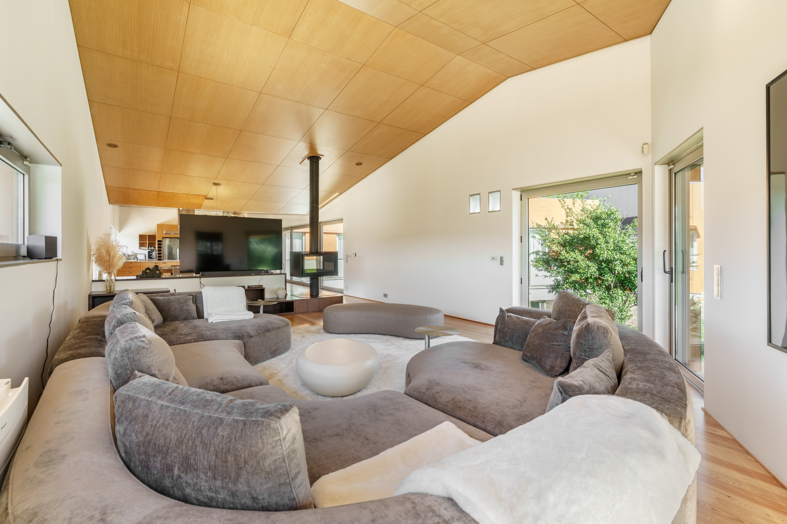

Matos Essence
Villa
a private villa, on the green hill of Braga
A contemporary house of wood, light and water — between the cathedral spires of Braga, the granite of Sameiro, and the slow bend of the Cávado. A house for long mornings, long tables, and the slow choreography of a Portuguese summer.
 [ Matos Essence Villa ]
[ Matos Essence Villa ]
Rua dos Matos 21, Braga
São Pedro de Este
Six suites · Sleeps twelve
Indoor heated pool · Steam · Gym
§ 01
The Dossier
Bedrooms
06
three king suites, a twin, a queen, a children's room
Bathrooms
07
stone, glass and pine, rain showers throughout
Sleeps
12
families, friends, or both at once
Wellness
∞
heated indoor pool, steam room, private gym
§ 02
A Sense of the House
 Plate 02 · Indoor pool
Plate 02 · Indoor poolAn indoor pool, year-round.
Twelve metres of still, heated water under a soft daylight ceiling. A steam room and rain shower are set into the adjacent wing — for the cool hours, and the warm ones.
 Plate 03 · Kitchen & dining
Plate 03 · Kitchen & diningA kitchen built for long meals.
Twin ovens, a six-burner range with hood, a Sub-Zero, a marble island. A dining table that seats ten, with a low window onto the valley. The chef arrives with the season's market by ten.

Plate 04 · The living roomRooms made for the slow afternoon.
A wood-burning stove at the centre, a curved velvet sectional, a Sonos zone in every room. Stay in. The world will wait.
§ 03
The Setting
 Plate 05 · The lawn, looking back
Plate 05 · The lawn, looking backSão Pedro de Este,
on the green side of Braga.
Rua dos Matos rises on the eastern hillside of Braga, in the small parish of São Pedro de Este — five minutes from the city centre, ten from the baroque stair of Bom Jesus, twenty from the granite outcrops of Sameiro. The Minho rolls north, vineyards to the Atlantic, Gerês climbing east. The villa sits in the middle of it.
"Five minutes from the cathedral, an hour from the Douro, a country away from everywhere."
— from the estate journal
An invitation
Come, & stay a while.
Direct inquiry receives the best rate, our full concierge, and the chef's menu on arrival.